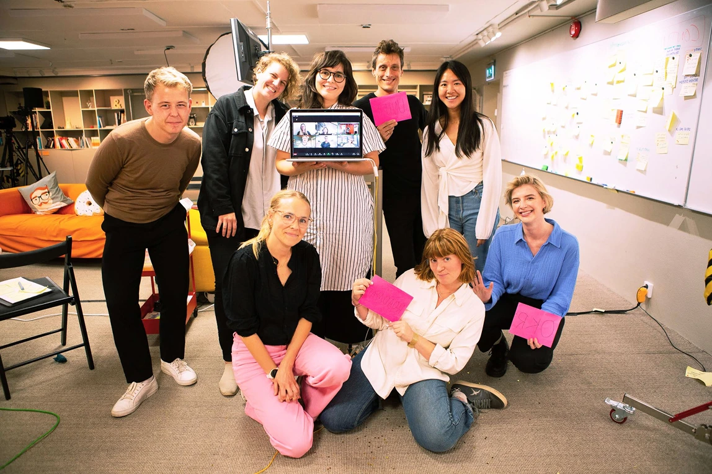
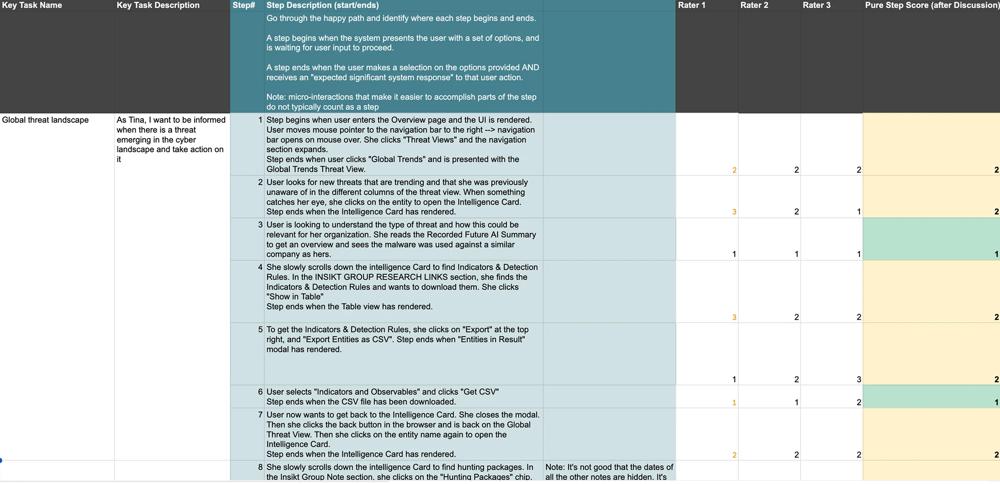
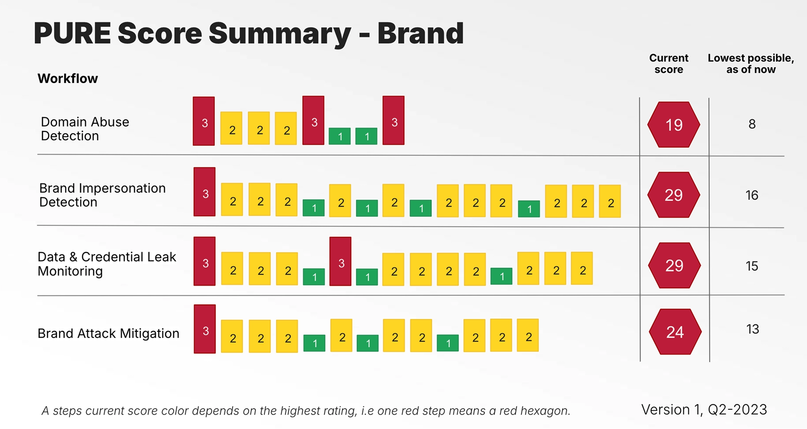
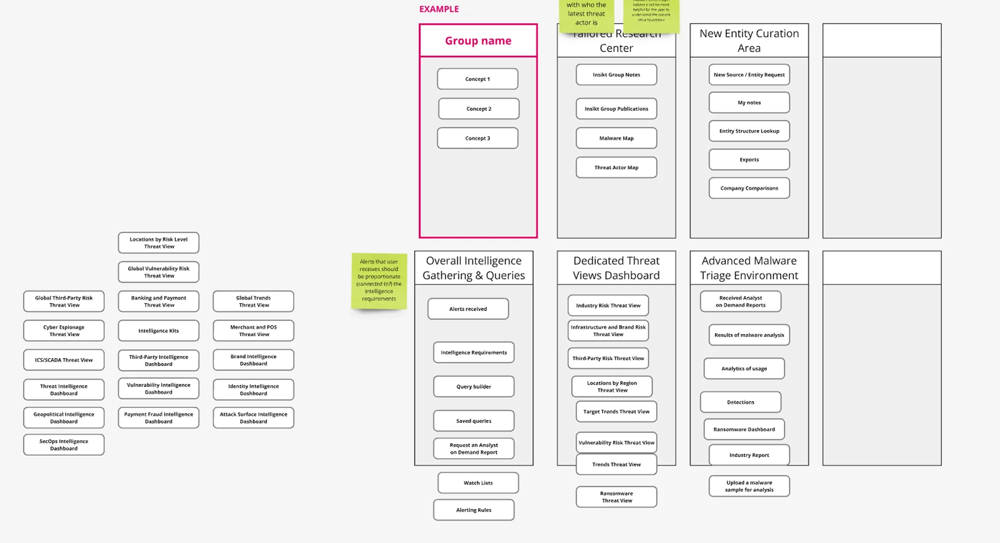
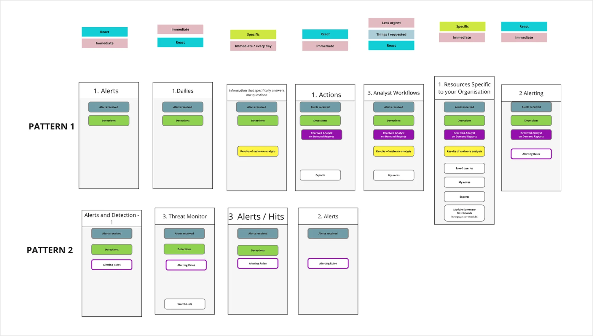
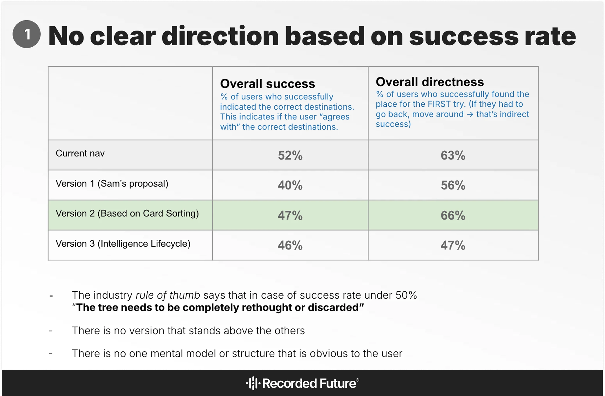
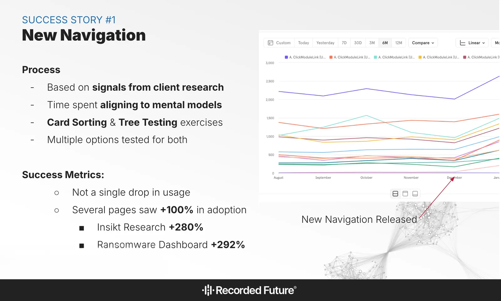

UX Research — Enterprise — Navigation
My Research Impact at a Cyber Security Company

"Users are confused by the verbiage we use in our portal."
Recorded Future is the most comprehensive threat intelligence cloud platform, in the world. Navigation and what things are called had become one of the most-cited ease of use issues, across the platform.
The problem.
Common user personas include Security Analysts, Investigators, Incident Responders and other highly important roles within the cyber security industry. These users are operating in high-stakes environments with sensitive, time-critical information. Aligning navigation with their mental models was a natural progression in the ongoing efforts to refine the experience.
From the brief.
“Navigation and what things are called is one of our biggest ease of use issue, we want to get it as right as possible and avoid introducing new issues and/or more complexity.”
“Choices for names of pages and nav sections will be subject to many lenses and opinions, so we need data to align everyone.”
“Users are confused by the verbiage we use in our portal. We come up with new words that deviate from industry standards.”
Six months at Recorded Future.
My internship covered a broad range of design tasks, but research was where I felt the most at home. This case highlights how I leaned into my most natural asset as a junior: a pre-existing intuition for people and facilitation.

Me and the design team at Recorded Future.
Solo work.
- Led PURE testing end-to-end: facilitated sessions, compiled results, and delivered the final report and presentation to stakeholders.
- Independently gathered and analyzed secondary research on navigational standards in the industry.
- Tools: Figma, Miro, Jira, Confluence, Optimal Workshop, Mixpanel, Google Suite, and more.
Duo work.
- Independently facilitated the majority of Card Sorting sessions and user interviews; worked jointly with UX Researcher Anna Ratkai throughout.
- Anna led Tree Testing and drove the overarching research synthesis, affinity mapping, and analysis.
Five methods. One result that surprised everyone.
Secondary research.
- Analyzed navigation conventions and terminology across competitor and industry UIs.
- Mapped findings against heuristic principle #4: consistency and standards.
- Presented key trends to the team; findings steered naming toward established terms like “Dashboard” over novel alternatives.
PURE testing.
- Recruited internal designers to map persona-driven navigation workflows.
- Facilitated sessions. Participants rated each workflow step 1–3 based on perceived cognitive load.
- Compiled scores into a full report pinpointing the highest-friction areas.
- Delivered results and presentation to stakeholders independently.

Rating sheet: participants scored each workflow step from 1–3.

From the final report: PURE scores per navigation workflow.

Card Sorting: moderated think-aloud protocol.

Analysis: Finding patterns and groupings across all 13 sessions.
Card sorting.
- 13 moderated sessions, open sort format. I facilitated the majority.
- Participants grouped navigation items by intuitiveness and importance.
- Surfaced how users naturally structure information, forming the basis for our proposed nav architectures.
Affinity diagramming.
- Brought in designers from outside the research duo to pressure-test the patterns.
- Structured raw session data into clear, cross-session groupings.
Tree testing.
- Three simplified, text-only nav structures tested against the current navigation in Optimal Workshop.
- The twist: none of the versions, new or old, clearly outperformed the others.
Don't panic. Find alignment.
- Up to this point, our research had provided solid, actionable data.
- The tree testing data wasn't inconclusive, but it didn't give us a clear direction to follow. A different approach was needed.
- We consulted closely with internal experts and product teams, weighing all collected data and findings.
- After careful deliberation, we agreed on a new navigation structure, that was a composite of all collected data and crossfunctional insights.

Tree testing results: no clear direction based on success rate.
Not a single drop in usage.

Reflections.
- Running interviews and group sessions from day one felt surprisingly natural. Anna and the team noticed it before I’d fully named it myself.
- Tree testing not having a clear winner wasn’t a failure. It validated some assumptions and challenged others, giving the process somewhere real to go.
- The affinity diagramming sessions where we pulled in external voices were some of the most productive. Outside perspectives break tunnel vision in ways internal iteration rarely can.
In their words.
“I was impressed with her facilitating skills. She runs interviews very professionally, asking the right questions and focusing on what is important.”
“She is a natural people person. This not only shows in how quickly she integrated into the team but also in how easily she led user interviews from the first try.”